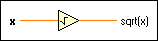

Square Root Function
Owning Palette: Numeric VIs and Functions
Requires: Base Development System
Computes the square root of the input value.
If x is negative, the square root is NaN unless x is complex. If x is a matrix, this function takes the matrix square root of x. The connector pane displays the default data types for this polymorphic function.
 | Note If you wire a value that has a unit with an odd exponent to the square root function, the wire breaks because LabVIEW does not support units with fractional exponents. For example, 15m2 is an acceptable input value, but 15m3 is not an acceptable input value. |

 Add to the block diagram Add to the block diagram |
 Find on the palette Find on the palette |